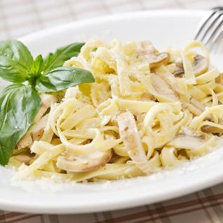

Fettuccine Alfredo

Description
Rich and Creamy Fettuccine Alfredo, I created this fettuccine Alfredo by modifying my mother's recipe, I must warn you, this recipe is not for the health-conscious!
Ingredients
- Pasta: Of course, you will need fettuccine pasta.
- Butter: This Alfredo sauce starts with two sticks of butter.
- Cream: The rich sauce calls for almost a cup of heavy cream.
- Seasonings:
Steps
- Bring a large pot of lightly salted water to a boil. Add fettuccine and cook for 8 to 10 minutes or until al dente; drain.
- Melt butter into cream in a large saucepan over low heat; add salt, pepper, and garlic salt. Increase the heat to medium; stir in grated Romano and Parmesan cheese until melted and sauce has thickened.
- Add cooked pasta to sauce and toss until thoroughly coated; serve immediately.